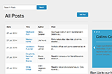
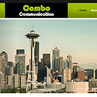
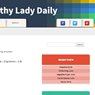

I love creating and building user friendly sites
Assisted with the development of WordPress Sites
Website maintenance, Visual communication, Email marketing, New business development, Customer Relationship management,SEO, Web analytics, Sales forecasting and reporting.
| Project | Description | Github | Visit Site |
|---|---|---|---|
|
Photogur Awesome Web Application |
Photogur is a clone of the images sharing site, Imgur | ||
|
 MiniBlog Web Application |
First Class Assigment with Bitmaker | ||
|
 Responsive Website |
Developed using Bootstrap 3 | ||
|
 healthyladydaily WordPress Site |
2012 Theme template child theme. The site is focusing on healthy lifestyle |